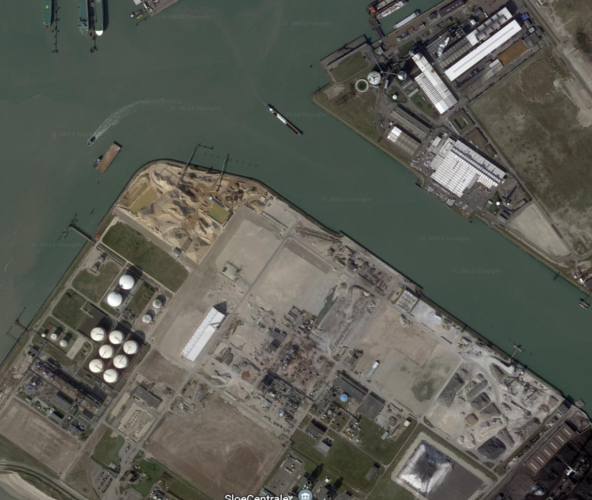

< Terug

Ship to Ship
Optie 2.
Het AMS Rope Picker Robot systeem bestaat uit een hydraulische arm op het schip zelf die ervoor zorgt dat de trossen om de bolder heen worden gelegd, waardoor het schip vastzit aan de schade. Deze arm heeft een lengte van vijftien meter en kan een hoogte van acht meter overbruggen. Dit systeem kan de bolders die op kade staan herkennen, dit gebeurd door middel van Artificiële Intelligence.
Het systeem kan bestuurd worden vanaf een tablet of vanuit de stuurhut van de kapitein, aangezien het laatste niet van toepassing is kan het bestuurt worden vanaf een tablet. De krachten die deze installatie kan opvangen liggen tussen de 50 kN tot de 600 kN. De opslaghoogte van dit systeem is 800 millimeter.
Optie 3.
Dit systeem bestaat uit een arm met aan het uiteinde een magnetische pads, die elektronisch zijn geregeld. Waardoor ze aan- en uitgeschakeld kunnen worden, dit heeft als voordeel dat het efficiënt met energie omgaat. Dit systeem is veiliger dan manueel aanmeren, omdat er geen mensen op de kade staan.
Hierdoor waar normaliter mensen fouten kunnen maken is dat in dit geval weggenomen, waardoor minder ongevallen kunnen gebeuren en dit zal het bedrijf geld kosten. Het scheelt ook geld, omdat er geen mensen zijn op de kade zelf dit scheelt manuren en ook kosten voor het bedrijf.